機器可以精準地理解一切邏輯，卻無法真正感受哪怕一絲情緒。智慧會商品化，而人性的重量不會。
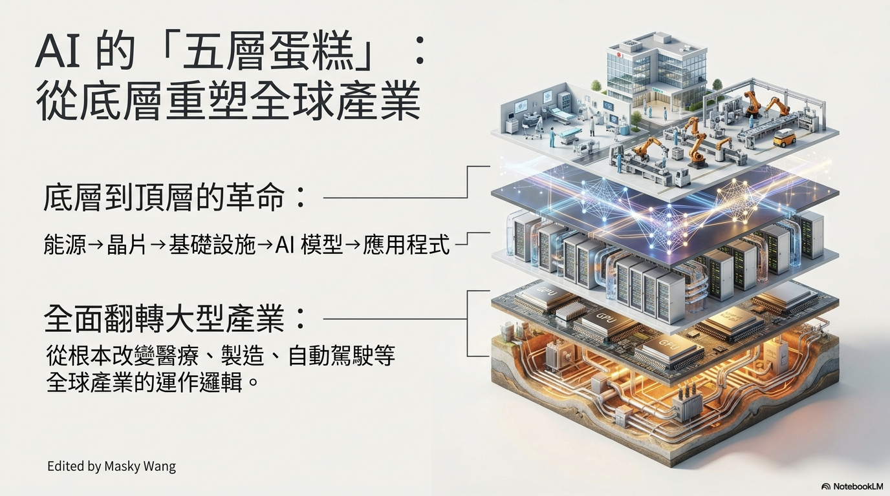
由底向上的全面重塑
這場革命像一座層層堆疊的基層：從能源、晶片與基礎設施，到強大的 AI 模型，最終化為改變社會的應用程式。
它不是單一領域的進步，而是一次從根本翻轉醫療、製造與人類生活方式的產業重構。
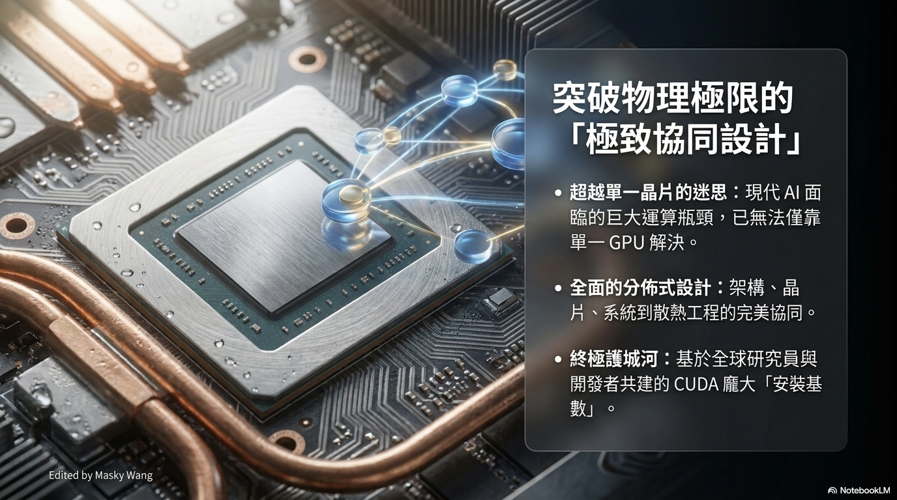
突破物理極限的協同
未知的規模早已超出單一晶片能解決的範圍。架構、晶片、系統、網路與散熱工程，必須像一個生命體般精準契合。
真正難以複製的護城河，也不只是硬體本身，而是全球研究者與開發者共同建立的龐大生態。
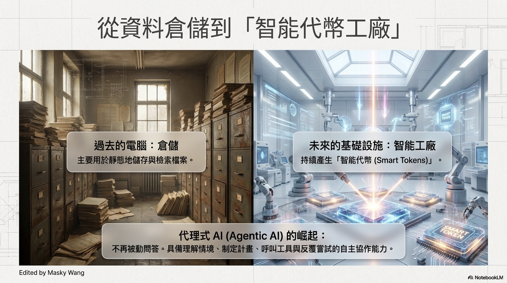
從檔案庫到智能工廠
過去的電腦像一座靜靜等待檢索的資料倉庫。未來的基礎設施，則是持續生產智能代幣、理解情境並制定計畫的工廠。
它不再只是被動回答，而會呼叫工具、拆解任務，與人形成自主協作。
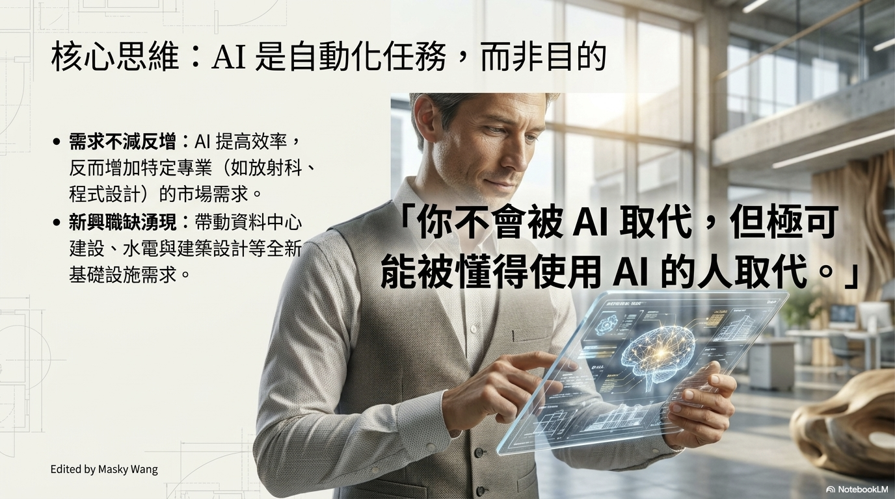
AI 是自動化任務，不是目的
技術躍進改變的是任務形式，不是人存在的目的。把重複工作交給機器，人便能把注意力放回判斷、創造與關係。
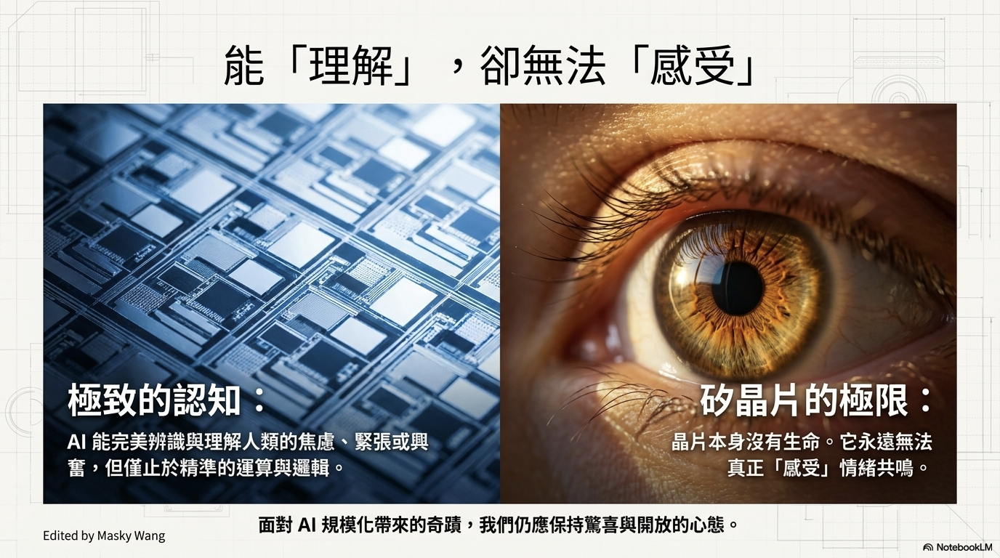
能理解，卻無法感受
晶片可以辨識焦慮、運算緊張與興奮，卻終究只是矽晶。它能處理情緒的訊號，卻沒有親身經歷情緒的生命。
認知可以被計算，主觀體驗卻構成人類不可化約的核心。
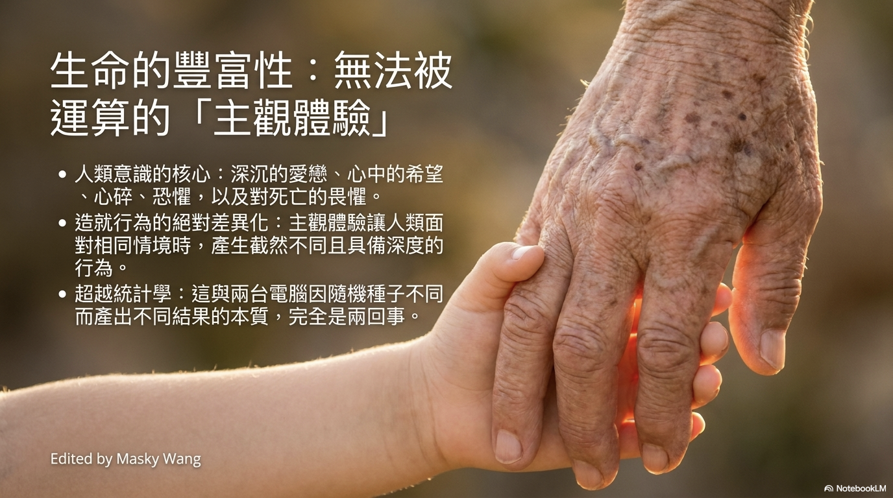
無法被運算的重量
生命的豐富藏在希望、恐懼、深沉的愛與心碎，也藏在我們對死亡與失去的畏懼。
這些親身經驗讓相同情境在不同人心中產生截然不同的深度，並非隨機種子所能類比。
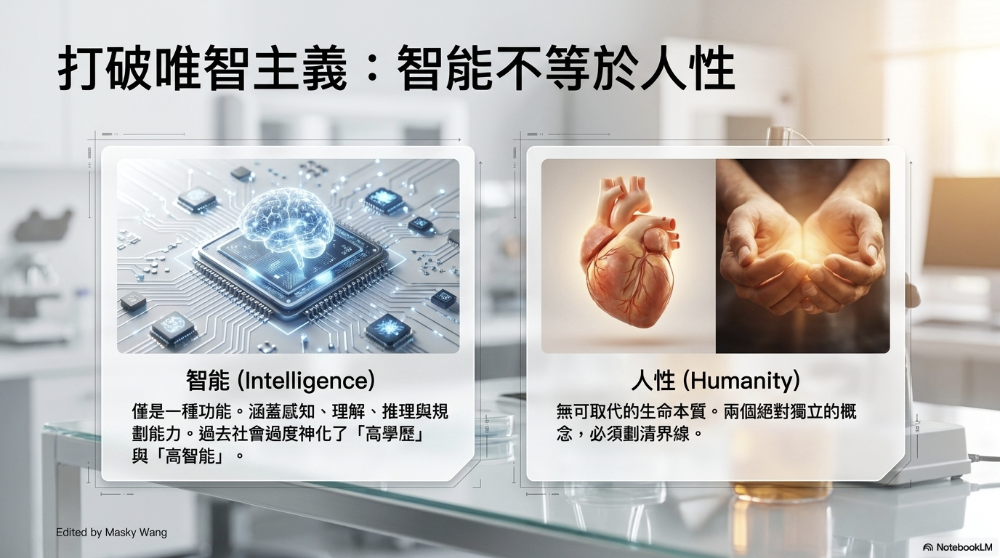
智能不等於人性
智能是一種解決問題的功能，包含感知、理解與推理；人性則承載同理、善意、責任與關係。
兩者可以彼此增強，卻不是同一件事。科技越強大，這條界線越需要清楚。
智能將如水與電普及
強大的運算與知識取得能力，終將不再是少數菁英的專利。當每個人都能輕易取得，聰明便失去原本的稀缺性。
這正是智能走向商品化的時刻，也迫使我們重新思考人的價值。
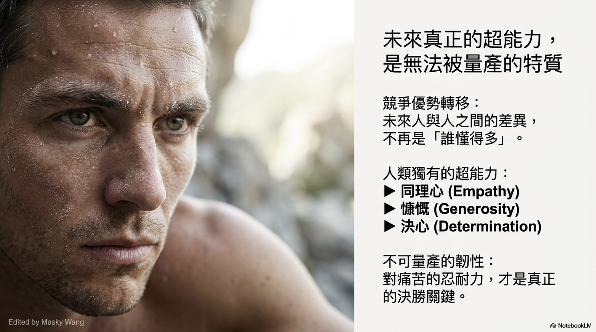
不可量產的超能力
當聰明不再是絕對優勢，真正稀缺的是忍耐痛苦、跌倒後再次站起、願意伸出援手的慷慨與同理。
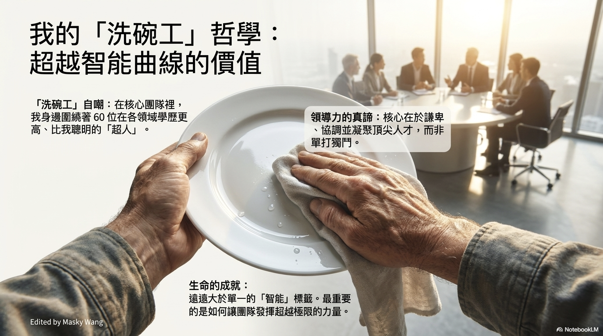
洗碗工的領導哲學
領導者不必是房間裡最聰明的人。真正的領導力，是謙卑地協調與凝聚頂尖人才，讓團隊發揮超越個體的力量。
成就遠大於一個智能標籤。品格與凝聚力，才是組織持續前進的根基。
來自 PDF 的完整視覺敘事
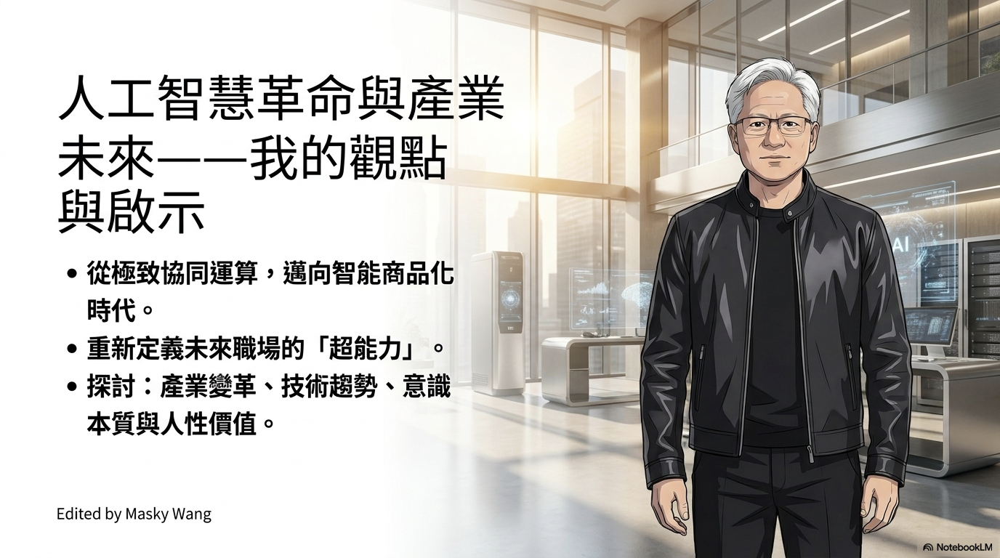
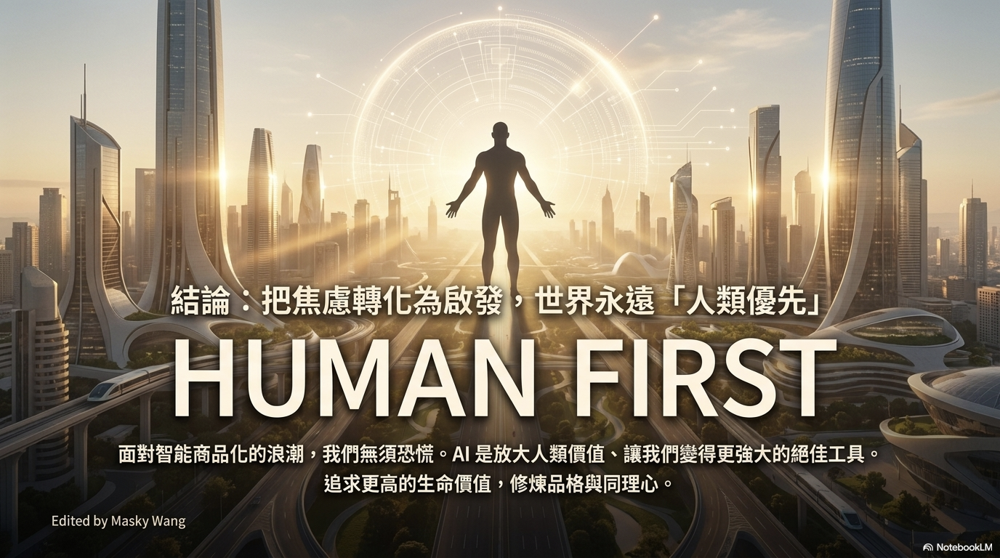